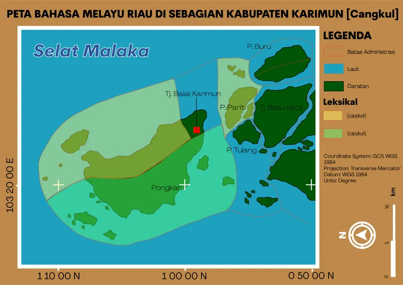

Back to portfolio
Peta Bahasa Melayu Riau Sebagian Kabupaten Karimun
This map was made with the data from Dinas Kebudayaan dan Pendidikan Provinsi Riau (1987) and the purpose of the map is to reconstruct the old data so people today can understand the data easily with the new style of map.
